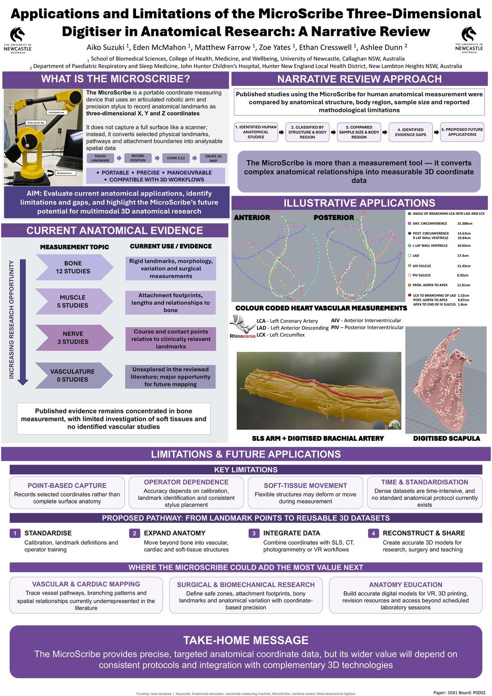
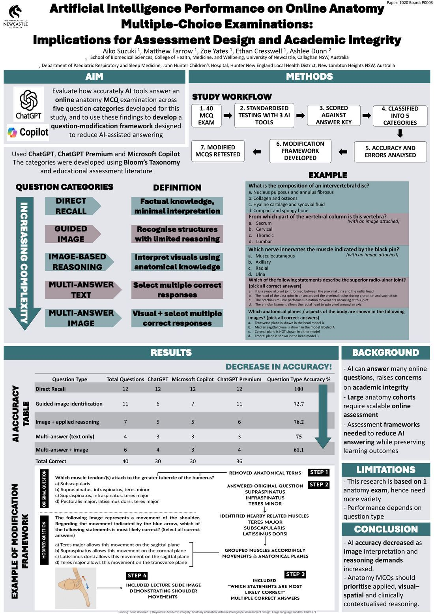
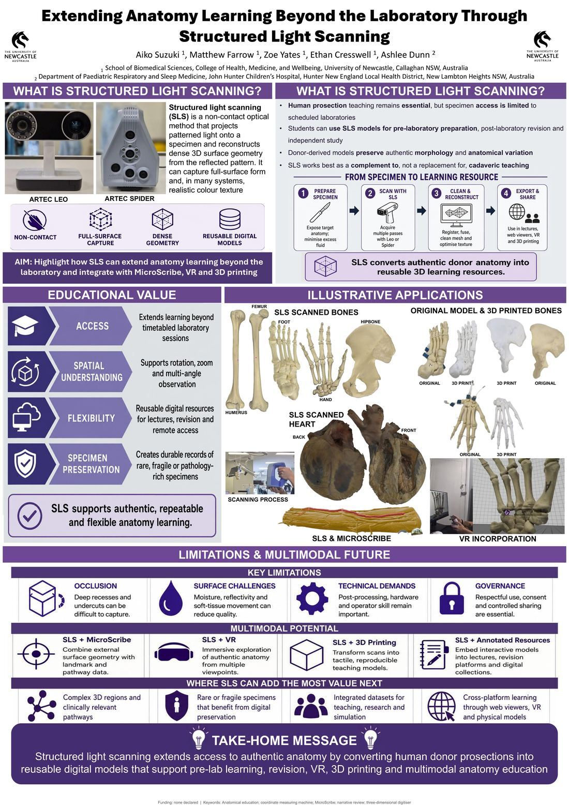
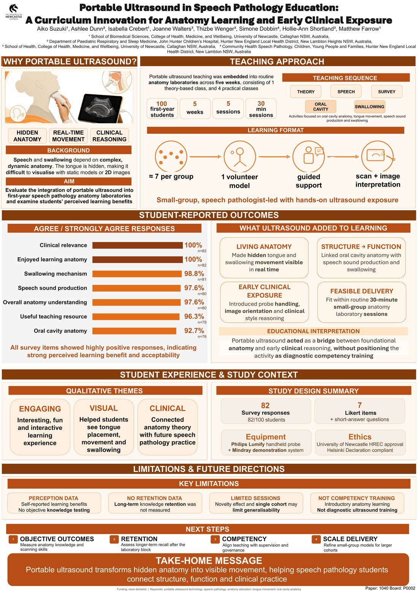
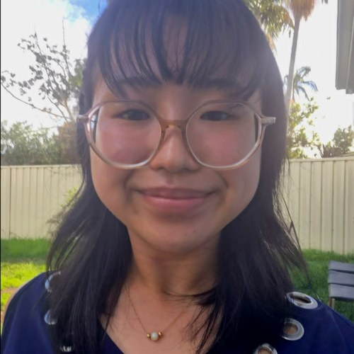

Platform demonstration
See the anatomy platform in action
This screen recording provides a guided glimpse of the platform without making donor-derived content or access credentials publicly available.
Hi, I'm Aiko — thanks for scanning in. My Honours year looks at how technology can strengthen the way we teach and learn anatomy — from 3D digitisation and AI to portable ultrasound — alongside other tools like 3D printing and VR that could take anatomy learning even further. This page holds the full story behind the poster in front of you, plus three more.
It was a privilege to attend IFAA 2026 and HAPS 2026, connect with people from across the anatomy and health sciences community, and share work from my Honours year.
At IFAA 2026, I presented research exploring the intersection of anatomy education and emerging technologies, including artificial intelligence, digital anatomy, 3D technologies, portable ultrasound and innovative approaches to teaching and learning.
One of my favourite parts of this work has been taking research beyond a traditional poster presentation and exploring how technology can make anatomical resources more accessible, interactive and reusable.
These projects bring together several areas I am passionate about—anatomy, education, research, 3D technology and digital innovation—while investigating how technology can complement and enhance traditional anatomy teaching rather than replace it.
Thank you to my supervisors, colleagues, fellow presenters, conference organisers and everyone who generously shared ideas and conversations throughout both conferences.
Alongside my conference research, I have been developing a private, password-protected platform where approved users can view and interact with digitised anatomical models created from human donor prosections.
To support the respectful, ethical and appropriate use of donor-derived material, the platform itself and its password are not published here. Educators, researchers and other interested users may contact me on LinkedIn to discuss access.
Contact me on LinkedIn ↗This screen recording provides a guided glimpse of the platform without making donor-derived content or access credentials publicly available.
I also made a funny YouTube Short about how anatomy doesn't have to be hard, using the biceps femoris to make learning a little more memorable and fun.

The MicroScribe is a portable coordinate measuring arm that records anatomical landmarks as precise X, Y, Z data. This review maps out where it's been used in human anatomical research so far, and where it could add the most value next.
Evidence is concentrated in bone measurement, with soft tissue underexplored and no published vascular work — a clear opening for future MicroScribe-based cardiac and vascular mapping.
My own work already puts this into practice. I've developed a multimodal approach combining the MicroScribe with structured light scanning — mapping the brachial artery's course with the MicroScribe alongside a full SLS scan of the same arm. I've also worked on the Hundred Hearts Project with Dr Theresa Larkin, measuring donor hearts with the MicroScribe while she measured the same hearts using the traditional string method — combining every measurement to build a 3D physical model that resembles a real heart.
Take-homeThe MicroScribe provides precise, targeted anatomical coordinate data, but its wider value will depend on consistent protocols and integration with complementary 3D technologies.

Three AI tools (ChatGPT, ChatGPT Premium, Microsoft Copilot) were prompted to answer the same 40 online MCQs used in last year's first-year musculoskeletal anatomy mid-semester exam, across five question types from straight recall to image-based multi-answer reasoning — then I built a framework for rewriting questions to resist AI answering. A paper on this work is currently in preparation, with publication hoped for.
Accuracy fell steadily as questions demanded more image interpretation and applied reasoning — the clearest lever for assessment design.
Take-homeAI accuracy decreased as image interpretation and reasoning demands increased. Anatomy MCQs should prioritise applied, visual-spatial and clinically contextualised reasoning.
All three AI tools were tested under identical conditions. Each was given the same source document containing the full 40-question exam, with one standardised prompt instructing it to answer everything as multiple-choice — no hints, follow-up prompts, or clarification were given to any tool. This kept the comparison fair across systems and reflected how a student would realistically use AI. I can't publish the actual exam questions here, since it's a live university assessment, but that's exactly how the testing worked.

Structured light scanning (SLS) projects patterned light onto a specimen and reconstructs full-surface 3D geometry — turning donor prosections into durable, reusable digital models students can use beyond scheduled lab hours.
SLS works best as a complement to, not a replacement for, teaching with human donor prosections — extending access, supporting spatial understanding, and preserving rare or fragile specimens as durable digital records.
Published research backs this up — in one study of SLS-based virtual dissection resources, 96.4% of medical students and 100% of surgical residents said they'd recommend the resource to others.
Take-homeStructured light scanning extends access to authentic anatomy by converting human donor prosections into reusable digital models that support pre-lab learning, revision, VR, 3D printing and multimodal anatomy education.
The latest version of my interactive anatomy platform is now private and password protected. A demonstration and information about requesting access are available above.
View platform demonstration ↑
The tongue and swallowing mechanism are hidden and hard to visualise from static models. Over five weeks, 100 first-year speech pathology students used portable ultrasound in small groups to watch their own oral cavity anatomy move in real time.
Every survey item scored highly — students described the sessions as engaging, visual, and a genuine bridge into clinical reasoning, without positioning it as diagnostic training. A minority did note the sessions ran long and felt they might work even better scheduled outside regular class time — useful signal for scaling this up.
Take-homePortable ultrasound transforms hidden anatomy into visible movement, helping speech pathology students connect structure, function and clinical practice.

Biomedical Science Honours student researching innovation in anatomy education, with a focus on how emerging technologies can improve the way students learn and are assessed.
My current project spans several areas:
Looking ahead, I'm interested in continuing similar research at PhD level.
I'm passionate about bridging emerging technology and health science education to make learning more effective, engaging, and rigorous.
This website and my private interactive anatomy platform were designed and developed independently as part of my anatomy education research.
I am interested in opportunities to expand this work through research collaboration, educational development and future study.